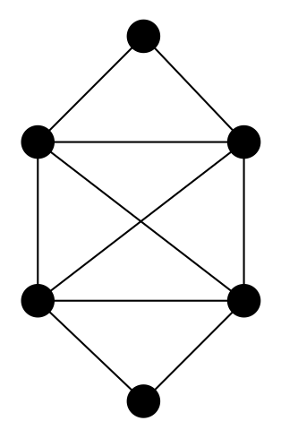

Théorie des graphes : parcours eulériens
But
Voir grâce à l’exemple des circuits eulériens ce qu’est un chemin, un cycle, et nos premiers algorithmes de graphes.
Le problème concret ou “comment dodger une ballade”
C’est un retour aux sources s’il l’on peut dire puisqu’il s’agit du problème des 7 ponts de Königsberg, qui permit à Euler d’inventer la théorie des graphes pour éviter d’aller se ballader.
La ville de Kaliningrad (anciennement appelée Königsberg) possédait 7 ponts aux 18ème siècle qui enjambent la Pregel. Ca ressemblait un peu à ça :

L’histoire veut qu’une tradition bourgeoise (et noble) de l’époque soit de faire les ballades digestives autour de ces ponts en essayant de tous les traverser une fois et de revenir à son point de départ.
Personne n’y arrivant, le jeu devint fort populaire. Sauf qu’Euler, s’il y a bien une chose qu’il n’aimait pas, c’était les ballades.
Du coup, un après-midi, plutôt que d’aller se ballader il griffonna le schéma suivant sur un coin de nappe :
Démontra à l’assistance médusée qu’il était impossible de faire ce qu’ils voulaient faire et que donc il préférait reprendre un peu de tarte que d’essayer un truc impossible.
Euler avait d’un coup prix 1kg et inventé la théorie des graphes.
formalisation du problème
Le dessin qu’Euler griffonna est celui-ci :

C’est un multi-graphe non orienté et est une modélisation du problème, les sommets $A$, $B$, $C$ et $D$ représentant les quatre berges de la ville et les arêtes les 7 ponts.
Le problème revient maintenant de trouver un cycle qui passe par toutes les arêtes du multi-graphe.
chemin, cycles et circuits
chemin
Soit $G = (V, E)$ un (multi-)graphe (non) orienté. Un chemin est une suite :
\[C = u_0u_1\dots u_i \dots u_k\]de sommets du graphe telle que :
- $u_iu_{i+1}$ soit une arête (resp. arcs) du graphe quelque soit $0 leq i < k$
- les arêtes (resp. arcs) sont deux à deux distinctes.
Le chemin $C$ à une longueur de $k$ (c’est le nombre d’arêtes). UN chemin de longueur $0$ est le chemin vide, sans arête (resp. arc).
cycle
Un cycle est un chemin qui commence et fini par le même sommet.
circuits
Un circuit est un cycle dans un graphe orienté.
Si l’on ne fait pas attention à l’orientation des arcs dans un graphe, et qu’on a une suite d’arcs orienté dans un sens et dans l’autre on appelle ça une chaîne.
connexité
Un graphe est dit connexe si pour toute paire de sommets $x$ et $y$ il existe un chemin allant de $x$ à $y$ dans $G$.
Si le graphe est orienté, il est dit fortement connexe s’il existe pour toute paire $x$ et $y$ de sommet un chemin allant de $x$ à $y$ et un chemin allant de $y$ à $x$.
La connexité est une notion très importante en théorie des graphes. Elle permet de relier deux sommets entre eux par des relations.
propriétés
On va montrer deux propriétés, l’une sur les chemin l’autre sur les cycles.
chemins élémentaires
Un chemin $ C = u_0u_1\dots u_i \dots u_k$ est dit élémentaire si les $u_i$ sont tous distincts deux à deux.
On peut extraire de tout chemin un chemin élémentaire.
Preuve :
Soit $C = u_0 \dots u_k$ un chemin avec $u_0 \neq u_k$ et on suppose qu’il existe $i < j$ tel que $u_i = u_j$.
La suite $C’ = u_0 \dots u_i u_{j+1} \dots u_k$ est toujours un chemin de longueur strictement plus petite que le chemin initial. La longueur minimale d’un chemin étant positive, on a une procédure qui diminue strictement le chemin s’il existe un cycle dans ce chemin, on va donc arriver à un minimum, c’est à dire un chemin sans cycle.
existence de cycles
On suppose qu’un graphe $G=(V, E)$ est tel que $\delta(x) \geq 2$ quelque soit le sommet $x$. Il existe alors un cycle dans ce graphe.
Preuve :
Soit $x \in V$. Il y a au moins 2 arêtes qui contiennent $x$, prenons en une. Si cette arête est une boucle on peut s’arrêter puisqu’on a trouvé notre cycle. Sinon, il existe une arête $xy$ avec $x\neq y$.
Il existe au moins 2 arêtes contenant $y$. On en a déjà une (l’arête $xy$), considérons en une autre. Si cette arête contient $x$ ou $y$ on a notre cycle (soit $xyx$ soit $xyy$), sinon il existe $z \not\in \{ x, y\}$ telle que $yz$ soit une arête. On a un chemin de longueur 3 : $xyz$.
On peut continuer comme ça en étendant itérativement le chemin et, comme le graphe est fini, on va forcément arriver à un chemin $u_0\dots u_k$ avec une arête $u_ku$ qui n’est pas encore dans le chemin mais tel que $x = u_i$ ($1\leq i \leq k$). Il existe donc bien un cycle : $u_i \dots u_ku_i$
retour au problème
Dans un graphe, un cycle qui prend toutes les arêtes du graphe est dit eulérien.
c’est impossible dans l’exemple
Avec notre graphe c’est impossible car il faut pouvoir repartir d’un sommet après en être arrivé. Si un tel cycle existait à chaque $u_i$, $u_{i-1}u_i$ et $u_iu_{i+1}$ sont des arêtes du graphes. Comme le chemin passe une seule fois par chaque arête du graphe on en conclut que $\delta(u_i)$ est paire.
Comme $\delta(C) = 3$ et est impair, il est impossible de trouver un cycle eulérien dans notre graphe.
une implication
La remarque précédente nous donne une implication importante :
S’il existe un cycle eulérien pour un graphe $G$, alors tout sommet est de degré pair.
la réciproque sur un exemple ?
Le graphe suivant a tous ses degrés pair. Pouvez-vous trouver un cycle eulérien ?

oui c’est possible une réponse possible avec l’ordre dans lequel examiner les sommets du chemin. Mais il y en a plein d’autres possibles !
{kind=link}
La réciproque.
Ce qui est très beau c’est que la réciproque complète est vraie. On a le théorème suivant :
théorème
Un graphe connexe admet un cycle eulérien si et seulement si le degré de tout ses sommets est pair.
démonstration
d’un côté
On l’a déjà prouvé, mais refaisons le pour la complétion.
Si un cycle eulerien $u_0 \dots u_k$ existe, à chaque $u_i$ : $u_{i-1}u_i$ et $u_iu_{i+1}$ sont des arêtes du graphes. Comme le chemin passe une seule fois par chaque arête du graphe, à chaque fois que l’on rencontre un sommet donné $x$, on lui trouve 2 nouvelles arêtes. On en conclut que $\delta(x)$ est égal au nombre de fois où $x$ apparaît dans le cycle fois 2 : c’est donc pair.
de l’autre
- Comme notre graphe est eulérien et connexe, les degrés de tous les sommets sont pairs et strictement positif : donc supérieur ou égal à 2. Il existe alors un cycle dans notre graphe.
- en supprimant le cycle du graphe, on obtient toujours un graphe dont les degrés sont pairs (en supprimant un cycle on a supprimé un nombre pair d’arête pour chaque sommet apparaissant dans le cycle)
- on supprime tous les sommets de degrés 0.
- on est ramené à notre hypothèse de départ, c’est à dire un graphe où tous les sommets sont de degrés pairs et strictement positif.
L’algorithme ci-dessus nous permet de décomposer notre graphe en une série de cycles, disons qu’il y en a $m$. Il nous reste à former un énorme cycle à partir de ces petits cycle.
Pour cela, comme le graphe est connexe il va exister deux cycles $C_1$ et $C_2$ qui partagent un sommet $x$. On peut alors faire commencer les cycles $C_1$ et $C_2$ par $x$ et on peut coller les deux cycles ensemble en formant le cycle : $C_1 + C_2[1:]$. On est passé de $m$ cycles à $m-1$ cycles et on peut recommencer la procédure jusqu’à n’obtenir qu’un unique cycle qui est notre cycle eulérien.
exemple
On a le graphe : 
- Le premier cycle trouvé est $1231$
- Le second cycle trouvé est $35243$
- Le troisième cycle trouvé est $4564$
{kind=link}
{kind=link}
{kind=link}
On raboute les second et troisième cycle ensembles : $43524$ et $4564$ en $43524564$. On peut ensuite rajouter le premier cycle en l’écrivant $2312$ et en l’insérant à la place du $2$ pour donner le ccle eulérien final : $43523124564$.
généralisation
IL existe de nombreuses généralisations aux cycles eulérien. Citons en deux : les chemins eulériens et les cycles eulériens des graphes orientés.
chemin eulérien
Un chemin eulérien entre $x$ et $y$ est un chemin entre $x$ et $y$ qui prend toutes les arêtes.
On prouve que les graphes dont tous les sommets sont de degré pair sauf $x$ et $y$ sont solution de ce problème. En effet, on ajoute une arête entre $x$ et $y$ et on est ramené aux problème du cycle eulérien.
graphes orientés
Les graphes orientés qui possèdent un cycle eulériens sont exactement les graphes où $\delta^+(x) = \delta^-(x)$ pour tout sommet $x$.